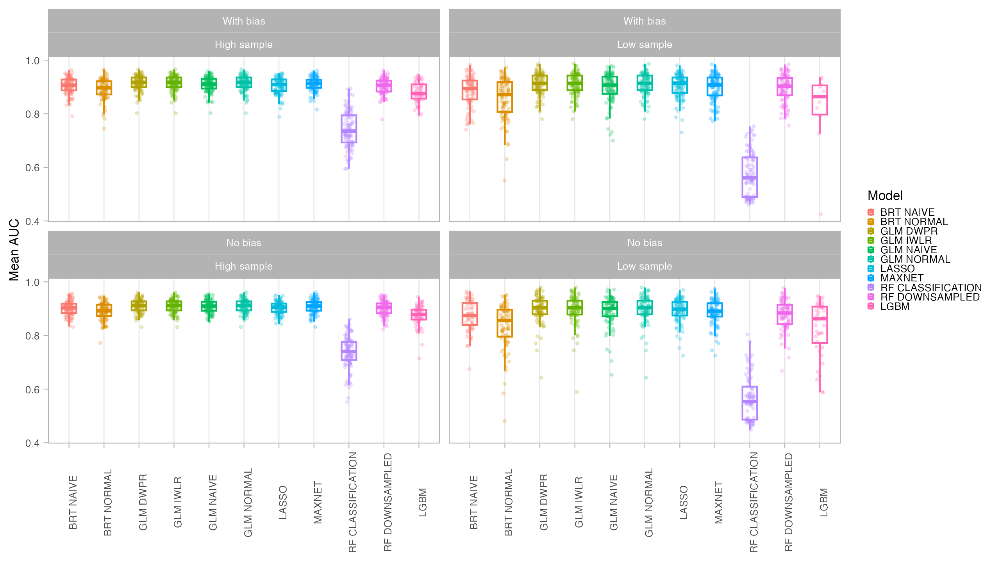
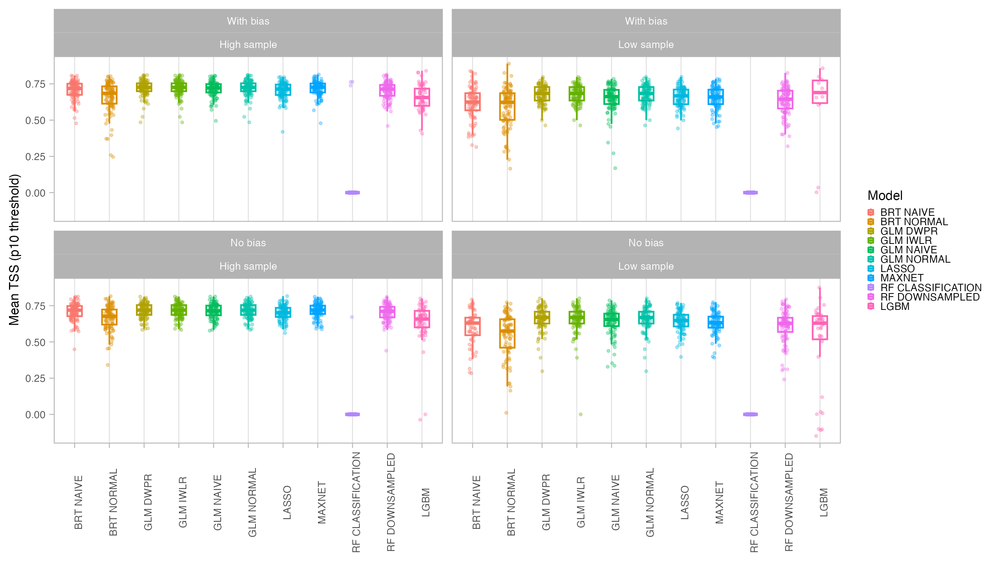
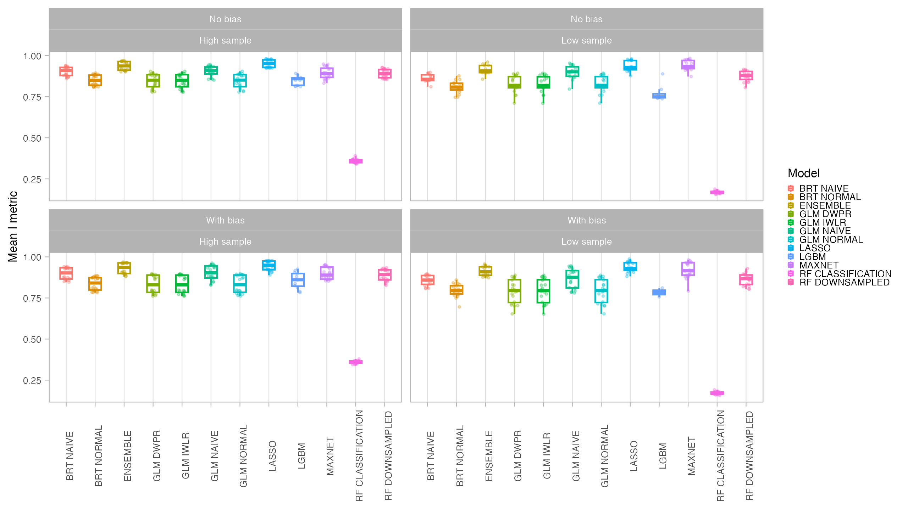
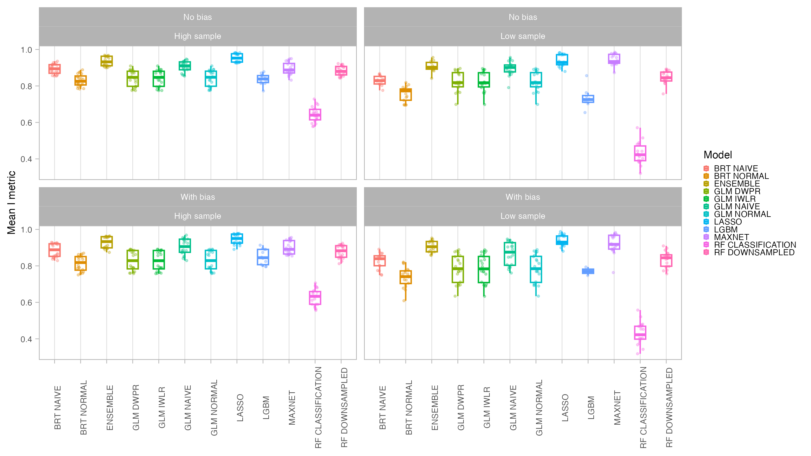
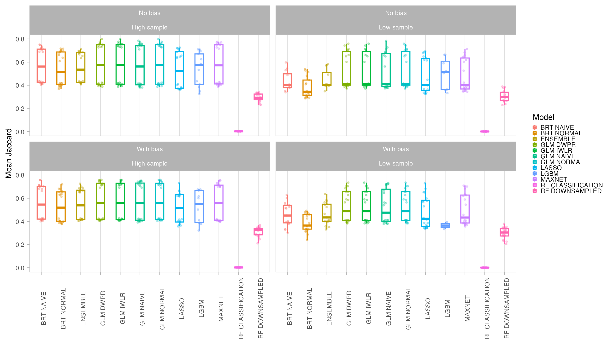
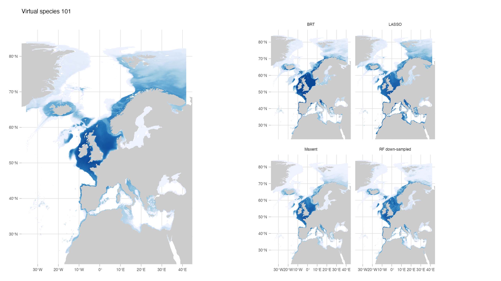
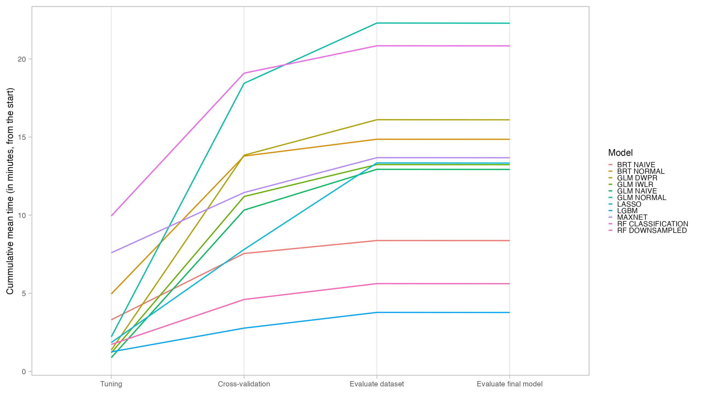
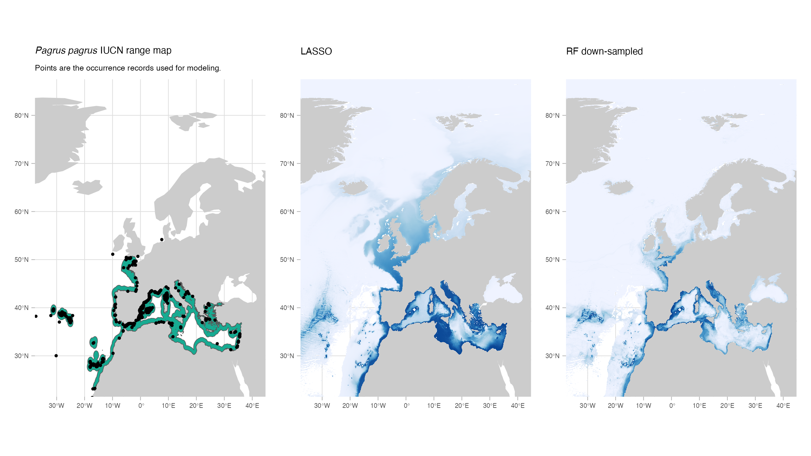

| Species | Model | AUC | CBI |
|---|---|---|---|
| Pagrus auriga | LASSO NAIVE | 0.9579113 | 0.6944080 |
| Pagrus auriga | MAXNET | 0.9278172 | -0.3580859 |
| Pagrus auriga | RF DOWNSAMPLED | 0.9526472 | 0.4740936 |
| Pagrus pagrus | BRT NAIVE | 0.9729053 | 0.7421134 |
| Pagrus pagrus | LASSO NAIVE | 0.9713942 | 0.7885390 |
| Pagrus pagrus | MAXNET | 0.9535204 | 0.7874382 |
| Pagrus pagrus | RF DOWNSAMPLED | 0.9767534 | 0.7510097 |
| Hippoglossus hippoglossus | BRT NAIVE | 0.9267527 | 0.6133649 |
| Hippoglossus hippoglossus | LASSO NAIVE | 0.9182766 | 0.8043597 |
| Hippoglossus hippoglossus | MAXNET | 0.9297201 | 0.8483099 |
| Hippoglossus hippoglossus | RF DOWNSAMPLED | 0.9410502 | 0.9431927 |
| Solea solea | BRT NAIVE | 0.9826825 | 0.8899457 |
| Solea solea | LASSO NAIVE | 0.9783434 | 0.9247209 |
| Solea solea | MAXNET | 0.9812059 | 0.8305053 |
| Solea solea | RF DOWNSAMPLED | 0.9841448 | 0.9642206 |
6 Testing SDM methods
Under development
This section is still under development.
The Deliverable 2 of the WP3 aims to produce species distribution models (SDM) for at least half of all marine species occurring in the study area of the MPA Europe project. As a first step, we tested which modeling approach would be better suited for our research problem. Specifically, we sought a model that would:
- Perform effectively under various conditions, including low and high sampling scenarios
- Exhibit sufficient flexibility to work in conditions when a careful individual tuning is unattainable (for example, we will not be able to chose a priori the better environmental layers for each species, but only for broad groups)
- Avoid or minimize overfitting
- Have short fitting and prediction time
Previous studies have already explored the performance of SDM algorithms and parameters (Marmion et al. 2008; Inman et al. 2021; Barbet-Massin et al. 2012; Valavi et al. 2022). Worth of note, Valavi et al. (2021) evaluated the performance of several presence-only methods under a point process approach, the same framework we are adopting here. Therefore, our tests were not aimed at conducting an exhaustive examination of SDM parameterization. Instead, building upon the aforementioned research, we concentrated on identifying the optimal settings for our specific modeling challenge.
In special, a very sensitive point for our study was the speed of fitting and prediction, given the necessity to fit a substantial number of models.
6.1 Chosen algorithms
Based on Valavi et al. (2021) and in our previous experience, we selected the following algorithms to test:
- GLM (Generalized Linear Models)
- LASSO (LASSO Regularized GLM, through
glmnet) - Maxent (Maximum Entropy algorithm, through
maxnetimplementation) - BRT (Boosted Regression Trees)
- RandomForest
We also considered for very experimental purposes one other implementation of Boosted Regression Trees (also called GBM - Gradient Boosting Model), the LightGBM. This machine learning method performs very well in machine learning tasks and is much faster than other GBM implementations. However, as it was designed for large datasets it can suffer from overfitting.
GLMs were fitted with four variations: no weighting, naive-weighting, IWLR (Infinitely Weighted Linear Regression) and DWPR (Down-Weighted Poisson Regression). BRT were fitted with no weight and with naive-weighting. Random Forest were fitted with no-weighted classification and down-sampled classification.
Algorithms were implemented as modules in the obissdm package. This package was specifically designed to hold the primary functions utilized in our modeling framework, thus facilitating more comprehensive documentation.
6.2 Test with virtual species
For the first part of the SDM methods testing, we created 2 virtual species (in which we have full control of the generative process; for more information on virtual species see Leroy et al. (2015) and Zurell et al. (2010)). Because we know the true distribution of the virtual species, we can better explore the differences in performance of the distinct algorithms under distinct conditions (Meynard, Leroy, and Kaplan 2019). We performed a set of testings considering the following scenarios:
- Two conditions of environmental data: all environmental variables known (species 101) and one variable unknown (Gaussian noise) (species 103)
- Two sampling conditions: with bias and without bias
- Two data availability conditions: low (30 points) and high (150 points)
This sums up to 8 modeling settings. Because the sampling process of points is random, we generated 10 samples of presence points for each species (yielding a total 80 models to be fitted). We also generated 10 samples (for each species) of presence-absence points to be used as independent evaluation datasets.
6.3 Model fitting
6.3.1 Environmental data
Environmental data for both the present period and for two future scenarios for the year 2100 (SSP2 and SSP5) were obtained from the new version of Bio-ORACLE (not published yet, but see Assis et al. (2018)) using the package biooracler. Specifically, for producing and fitting the models of the virtual species we used the following variables (all for surface):
- Sea Temperature
- Salinity
- Phosphate
- Total Phytoplankton
- Bathymetry
All variables were cropped to the study area, but considering a buffer to expand it. Variables were masked to a bathymetry of -1500m
6.3.2 Quadrature sampling
Quadrature points were randomly sampled in a number of 150000. We chose this number using a Down-Weighted Poisson Regression over different numbers of quadrature points (Renner et al. 2015; El-Gabbas and Dormann 2018). The chosen number was enough to likelihood convergence in all species.
6.3.3 Model tuning and evaluation
For model tuning and evaluation we used a spatial block cross-validation strategy, with 5 folds. Spatial block cross-validation is better suited for assessing spatial models, as it ensures that testing data will show at least a certain degree of environmental difference from the information used to train the model (Roberts et al. 2017). We tested two types of spatial blocks: grid blocks and latitudinal bins. In the first, a grid of squares with a certain size are defined over the study area and randomly assigned into folds, while in the second, the study area is divided in a fixed number of latitudinal bins which are randomly assigned into folds (e.g. Assis et al. (2023)).
The size of the block can be defined to reflect the spatial correlation between variables (Valavi et al. 2018). However, for this test we defined a fixed block size for all tests to improve the fitting speed. The size (5 degrees) is deemed large enough to provide environmental variability to the testing data.
Models were evaluated using AUC (Area Under the Receiver-Operating-Characteristic Curve) and CBI (Continuous Boyce Index), which are better suited for presence-only models. We also obtained TSS (True Skill Statistics) for three distinct thresholds (Maximum Sensitivity + Specificity, P10 and Minimum Training Presence). Final predictions for both the current and future period were compared with the original species suitable area using the I statistic of niche overlap, with a higher niche overlap meaning that the model better reflected the original condition. Binary maps produced with the P10 threshold were compared with the binary occurrence maps of the virtual species using Jaccard.
6.3.4 Results
In general, all models had a good performance, except for the classification Random Forest. Forest based methods are know to have problems with class imbalance, a problem solved with the down-sampled implementation. Some methods had an excellent performance both for model evaluation (AUC, CBI) and capacity of predicting a similar distribution than the true one (I, Jaccard metrics): LASSO, Maxent and BRT naive. Indeed, LASSO and Maxent were expected to behavior similarly as under the hood maxnet uses LASSO.






From those models with best performance, LASSO was the one with fastest tuning-prediction time, although with very close timings to Maxent.

6.4 Test with real species
For the second part of the SDM methods testing, we selected 4 fish species occurring in our study area for which we had a good number of points coverage and, thus, a better knowledge of the current distribution of the species. We also chose those species because IUCN range maps are available and thus we could assess how well our models agree with the range maps (although we acknowledge that IUCN range maps can have important bias).
We tested in this part 4 algorithms that scored better with the virtual species test: LASSO, Maxent, BRT and RF Down-sampled.
Model fitting followed the same methods described for the virtual species test. Occurrence data for the species were obtained from both OBIS and GBIF. To reduce bias, only 1 occurrence point per cell was kept. Ideally, this record pruning would also consider the spatial autocorrelation and points would be pruned in a distance that reduces such correlation (see for one application). However, calculating the spatial autocorrelation for each species that will be modeled can introduce a significant additional time. Thus, for those tests we considered two simpler strategies (although we will try one other approach in the future): (1) keeping 1 point per cell in the same resolution of the environmental variables and (2) keeping 1 point per cell in a grid with a coarsened resolution (the double of the environmental layers, 0.1 degrees).
We chose a set of environmental variables to be used with all 5 species: sea temperature, salinity, phosphate, total phytoplankton and sea water velocity. The correlation level of those variables is low, as assessed through VIF (Variance Inflation Factor) using the function vifstep with a threshold of 6 (package usdm, Naimi et al. (2013)). Despite the same set of variables was used to all species, the type of the variable varied according to the species’ mode of life (e.g. bottom temperature for benthic species). Data for the mode of life was obtained through an automated search in three databases: Sealifebase, Fishbase, and WoRMS. The search was done in this order, so that if the information was found in multiple sources, the first one was used. In case the information was not found for a particular species, the function tried to find the mode of life of the parent level. The function was also developed in a way to be conservative. So, if a species was registered as both benthic and pelagic, we used variables for benthic environment.
For benthic, demersal or pelagic species associated with the bottom we set variables describing conditions in the maximum depth. Mesopelagic species would be modeled with conditions for the mean depth, while both pelagic and species for which no information was found were set to be modeled with surface conditions.
6.4.1 Results
Again, all models in general performed well, although the Maxent CBI result for Pagrus auriga was poor (counter prediction).
Aggregating the points to a coarser resolution had a small effect in the results.
| Species | Model | AUC | CBI |
|---|---|---|---|
| Pagrus auriga | LASSO NAIVE | 0.9668805 | 0.6126929 |
| Pagrus auriga | MAXNET | 0.8952810 | -0.1096416 |
| Pagrus auriga | RF DOWNSAMPLED | 0.9534657 | 0.3234745 |
| Pagrus pagrus | BRT NAIVE | 0.9727463 | 0.7777396 |
| Pagrus pagrus | LASSO NAIVE | 0.9614321 | 0.8900431 |
| Pagrus pagrus | MAXNET | 0.9678948 | 0.6614255 |
| Pagrus pagrus | RF DOWNSAMPLED | 0.9743048 | 0.8677961 |
| Hippoglossus hippoglossus | BRT NAIVE | 0.9206924 | 0.7825685 |
| Hippoglossus hippoglossus | LASSO NAIVE | 0.8955754 | 0.8044800 |
| Hippoglossus hippoglossus | MAXNET | 0.9132706 | 0.8247683 |
| Hippoglossus hippoglossus | RF DOWNSAMPLED | 0.9321905 | 0.9087753 |
| Solea solea | BRT NAIVE | 0.9812337 | 0.9058282 |
| Solea solea | LASSO NAIVE | 0.9748347 | 0.9123480 |
| Solea solea | MAXNET | 0.9798795 | 0.9078488 |
| Solea solea | RF DOWNSAMPLED | 0.9833917 | 0.9444118 |
Models in general reflected the spatial distribution of the occurrence points well.

None of the models showed high levels of agreement with the IUCN maps. This discrepancy could be caused by issues related to the expert range maps. However, it might also highlight a potential difficulty in selecting a method to binarize the models. In this study, we opted for the P10 threshold, which determines the value at which 90% of the presence points would be classified as ‘present’. This represents a relatively conservative approach, but alternative methods may yield better results.
| Species | Model | Jaccard |
|---|---|---|
| Hippoglossus hippoglossus | STD LASSO NAIVE | 0.2535797 |
| Hippoglossus hippoglossus | STD MAXNET | 0.2457328 |
| Hippoglossus hippoglossus | AGG BRT NAIVE | 0.2218551 |
| Hippoglossus hippoglossus | STD RF DOWNSAMPLED | 0.0903114 |
| Pagrus auriga | STD LASSO NAIVE | 0.3148879 |
| Pagrus auriga | STD MAXNET | 0.2791559 |
| Pagrus auriga | AGG BRT NAIVE | NA |
| Pagrus auriga | STD RF DOWNSAMPLED | 0.0520648 |
| Pagrus pagrus | STD LASSO NAIVE | 0.4874864 |
| Pagrus pagrus | STD MAXNET | 0.3373778 |
| Pagrus pagrus | AGG BRT NAIVE | 0.4464283 |
| Pagrus pagrus | STD RF DOWNSAMPLED | 0.0558340 |
| Solea solea | STD LASSO NAIVE | 0.3025897 |
| Solea solea | STD MAXNET | 0.2486340 |
| Solea solea | AGG BRT NAIVE | 0.2554269 |
| Solea solea | STD RF DOWNSAMPLED | 0.0972130 |
NOTE: BRT model failed for Pagrus auriga when aggregated.
6.5 Overview and chosen approach
Based on the findings presented here, it is suggested that both LASSO and Maxnet are viable options. Additionally, BRT and RF Down-weighted could be considered as potential candidates. Since LASSO and Maxnet are closely related, we recommend using LASSO due to its faster implementation.
Availability of codes
The codes for this modeling exercise are available on the GitHub repository iobis/mpaeu_sdm. However, the data is not available due to size limitations on GitHub. Soon this data will be available in other repository.
6.6 References
Assis, Jorge, Filipe Alberto, Erasmo C. Macaya, Nelson Castilho Coelho, Sylvain Faugeron, Gareth A. Pearson, Lydia Ladah, et al. 2023. “Past Climate-Driven Range Shifts Structuring Intraspecific Biodiversity Levels of the Giant Kelp (Macrocystis Pyrifera) at Global Scales.” Scientific Reports 13 (1). https://doi.org/10.1038/s41598-023-38944-7.
Assis, Jorge, Lennert Tyberghein, Samuel Bosch, Heroen Verbruggen, and Ester A Serrao. 2018. “Bio-ORACLE V2.0: Extending Marine Data Layers for Bioclimatic Modelling.” Global Ecology and Biogeography 27: 277:284. https://doi.org/10.1111/geb.12693.
Barbet-Massin, Morgane, Frédéric Jiguet, Cécile Hélène Albert, and Wilfried Thuiller. 2012. “Selecting Pseudo-Absences for Species Distribution Models: How, Where and How Many?: How to Use Pseudo-Absences in Niche Modelling?” Methods in Ecology and Evolution 3 (2): 327–38. https://doi.org/10.1111/j.2041-210X.2011.00172.x.
El-Gabbas, Ahmed, and Carsten F. Dormann. 2018. “Improved Species-Occurrence Predictions in Data-Poor Regions: Using Large-Scale Data and Bias Correction with down-Weighted Poisson Regression and Maxent.” Ecography 41 (7): 1161–72. https://doi.org/10.1111/ecog.03149.
Inman, Richard, Janet Franklin, Todd Esque, and Kenneth Nussear. 2021. “Comparing Sample Bias Correction Methods for Species Distribution Modeling Using Virtual Species.” Ecosphere 12 (3). https://doi.org/10.1002/ecs2.3422.
Leroy, Boris, Christine N. Meynard, Céline Bellard, and Franck Courchamp. 2015. “Virtualspecies, an R Package to Generate Virtual Species Distributions.” Ecography 39 (6): 599–607. https://doi.org/10.1111/ecog.01388.
Marmion, Mathieu, Miia Parviainen, Miska Luoto, Risto K. Heikkinen, and Wilfried Thuiller. 2008. “Evaluation of Consensus Methods in Predictive Species Distribution Modelling.” Diversity and Distributions, 11.
Meynard, Christine N., Boris Leroy, and David M. Kaplan. 2019. “Testing Methods in Species Distribution Modelling Using Virtual Species: What Have We Learnt and What Are We Missing?” Ecography 42 (12): 2021–36. https://doi.org/10.1111/ecog.04385.
Naimi, Babak, Nicholas A. S. Hamm, Thomas A. Groen, Andrew K. Skidmore, and Albertus G. Toxopeus. 2013. “Where Is Positional Uncertainty a Problem for Species Distribution Modelling?” Ecography 37 (2): 191–203. https://doi.org/10.1111/j.1600-0587.2013.00205.x.
Renner, Ian W., Jane Elith, Adrian Baddeley, William Fithian, Trevor Hastie, Steven J. Phillips, Gordana Popovic, and David I. Warton. 2015. “Point Process Models for Presence-Only Analysis.” Edited by Robert B. O’Hara. Methods in Ecology and Evolution 6 (4): 366–79. https://doi.org/10.1111/2041-210X.12352.
Roberts, David R., Volker Bahn, Simone Ciuti, Mark S. Boyce, Jane Elith, Gurutzeta Guillera-Arroita, Severin Hauenstein, et al. 2017. “Cross-Validation Strategies for Data with Temporal, Spatial, Hierarchical, or Phylogenetic Structure.” Ecography 40 (8): 913–29. https://doi.org/10.1111/ecog.02881.
Valavi, Roozbeh, Jane Elith, José J. Lahoz-Monfort, and Gurutzeta Guillera-Arroita. 2018. “blockCV: An r Package for Generating Spatially or Environmentally Separated Folds for k-Fold Cross-Validation of Species Distribution Models.” Edited by David Warton. Methods in Ecology and Evolution 10 (2): 225–32. https://doi.org/10.1111/2041-210x.13107.
———. 2021. “Modelling Species Presence-Only Data with Random Forests.” Ecography 44 (12): 1731–42. https://doi.org/10.1111/ecog.05615.
Valavi, Roozbeh, Gurutzeta Guillera-Arroita, José J. Lahoz-Monfort, and Jane Elith. 2022. “Predictive Performance of Presence-Only Species Distribution Models: A Benchmark Study with Reproducible Code.” Ecological Monographs 92 (1). https://doi.org/10.1002/ecm.1486.
Zurell, Damaris, Uta Berger, Juliano S. Cabral, Florian Jeltsch, Christine N. Meynard, Tamara Münkemüller, Nana Nehrbass, et al. 2010. “The Virtual Ecologist Approach: Simulating Data and Observers.” Oikos 119 (4): 622–35. https://doi.org/10.1111/j.1600-0706.2009.18284.x.